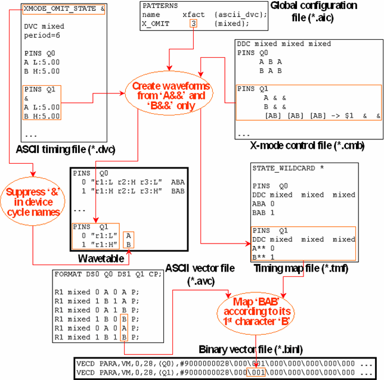

Mixing X-Modes: Dummy State Characters
It is possible to run different pins with different x-modes simultaneously (horizontal mix of x-modes), and also to change the x-mode from one vector to the next (vertical mix of x-modes); these options can also be combined. The basic idea is to run formally all pins at the highest required x-mode in all vectors, but to create waveforms with fewer actions for those pins (horizontal mix), or ASCII device cycles (vertical mix), that actually run at a lower x-mode factor.
In order to create the waveforms for the lower x-modes, you must do two things for the respective pins, or ASCII device cycles, namely,
- define dummy state characters, that is, state characters for which no action is specified, in the ASCII timing file, and
- restrict the state character sequences from which waveforms are created to those containing the dummy state character at the required positions in the x-mode control file (see The X-Mode Control File (*.cmb) ).
Suppose, for example, that your pattern runs at x-3 mode, but that output pin Q1 is to run at normal speed. Then the state character definitions for Q1 could look as follows:
DVC mixed
PINS Q1
&
L L:6
H H:6
Here the ampersand (&) is the dummy state character. In the x-mode control file, any triple of state characters for Q1 must be mapped to a triple that contains the dummy state character at two positions as, for example, in
DDC mixed mixed mixed
PINS Q1
[LH] [LH] [LH] -> $1 & &
From these entries, the following wavetable will be created for Q1:
PINS Q1
0 "r1:L" L..
1 "r1:H" H..
Suppressing the Dummy State Character in the Device Cycle Names
When you call ait with the -Fx option (see ait command line parameters), the device cycle names in the wavetable are built up from the state characters on whose definitions the waveform is based. If you use mixed x-modes, you can suppress the dummy state character in these names with the XMODE_OMIT_STATE statement. This statement must be added at the start of the ASCII timing file and has the following format:
XMODE_OMIT_STATE <dummy_character>
Note that this feature requires the following conditions to be met:
- The dummy state character must be the first in the respective timing record within the ASCII timing file (as in the previous example).
- The mapping statements of the x-mode control file (see The Mapping Operator '->' ) must not contain the dummy state character explicitly or implicitly in the source sequences on the left side of the mapping operator (as in the previous example ). Thus, the wildcard character * must not be used on the left side of these statements.
- The target sequences on the right side of the mapping statements must also occur as normal entries.
The following figure shows an example of a horizontal x-mode mix where ait is called with -Fx, and the dummy state character & is suppressed:

Observe the following points in the figure:
- The global control file record for X_OMIT specifies the highest required x-mode factor, which is 3. The pin Q0 runs at a genuine x-3 mode factor, whereas pin Q1 actually runs at normal speed.
- The statement for Q1 in the x-mode control file says that waveforms are to be created only from the state character sequences A&& and B&&, and that all other state character sequences occurring in the ASCII vector file are to be mapped to the DC/DC power units of these waveforms, according to their first character (for details seeThe X-Mode Control File (*.cmb)). This mapping is coded in the timing map file excerpt, where the asterisk ('*') is a wildcard for arbitrary state characters (for details see The Pattern Configuration File (*.vbc)).
Mapping of Dummy State Characters to the State Wildcard Character
You can map dummy state characters to the state wildcard character without an x-mode control file by using the XMODE_WILDCARD_MAP_STATE statement.
This statement must be added at the start of the ASCII timing file and has the following format:
XMODE_WILDCARD_MAP_STATE <dummy_characters>
The characters specified for <dummy_characters> will be replaced by the wildcard character '*' in the timing map file.